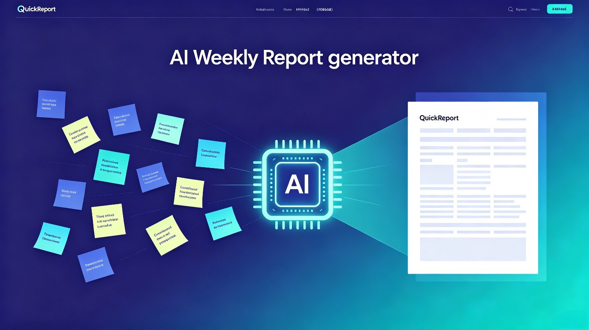

输入工作要点，3秒生成专业周报 — 把每周1小时变成3分钟

每周写周报，是职场人绕不开又最不想面对的事。速报AI用AI把这个过程压缩到几秒钟。
职场人每周写周报平均花30-60分钟，要么写成流水账缺乏重点，要么反复改措辞效率低下。做了很多事却"不会写"，是普遍痛点。
同事和朋友普遍反映写周报是"费时但不创造价值"的事。AI内容生成已很成熟，完全可以让AI把零散要点转化为结构化周报，解放这部分时间。
一个Web应用，用户输入本周工作要点（关键词或短句），AI自动生成结构化、专业的工作周报，支持多种风格模板，可一键复制到飞书、钉钉、企业微信。
左边是用户随手输入的工作要点，右边是AI生成的专业周报。
所有"每周要交差"的职场人，都是速报AI的用户。
互联网从业者、项目经理、运营人员、销售、教师、公务员——所有需要定期写工作汇报的职场人士。
每周五下班前写周报、月末写月度总结、项目阶段性汇报、述职与年终总结等需要回顾工作的场景。
费时、流水账、反复改、难兼顾领导偏好、周五下班前的"周报焦虑"——写周报成了职场人每周的低效负担。
写周报平均每周30-60分钟，一年累计约25-50小时
不知如何组织语言，事项罗列缺乏重点和成果感
措辞不够专业，反复修改效率低下
不同领导偏好不同风格，难以一次满足
从输入到输出，每一步都为"省时间"而设计。
用关键词或短句记录工作，如"上线登录功能、修了3个bug"
自动生成结构化周报，含本周完成、进展说明、下周计划
简洁版 / 详细版 / 汇报版 / 数据导向版，一键切换
生成后直接复制到飞书、钉钉、企业微信、邮件
本地保存历史周报，方便月末回顾汇总
数据存储在浏览器本地，不上传服务器，保护工作隐私
四步完成，从打开到提交不超过3分钟。
随手写下本周
工作关键词
3秒生成结构化
专业周报
切换简洁/详细/
汇报等模板
一键复制到
飞书/钉钉
不只是省时间，更是让实干者的工作成果被看见。
减轻职场人普遍存在的"汇报焦虑"。很多实干型员工工作能力出色但不擅长文字表达，导致工作成果被低估。速报AI帮助不善言辞的实干者也能写出清晰、专业的汇报，让成果被看见，促进职场公平与沟通效率。
单文件前端应用 + 大模型API，轻量、可离线、保护隐私。
React + Tailwind CSS，本地运行无需后端，双击即可打开
接入SenseNova、OpenRouter等大模型API，将工作要点转化为专业周报
周报历史存储在浏览器localStorage，不上传服务器，保护隐私
全程使用TRAE进行开发，AI辅助生成代码，高效产出